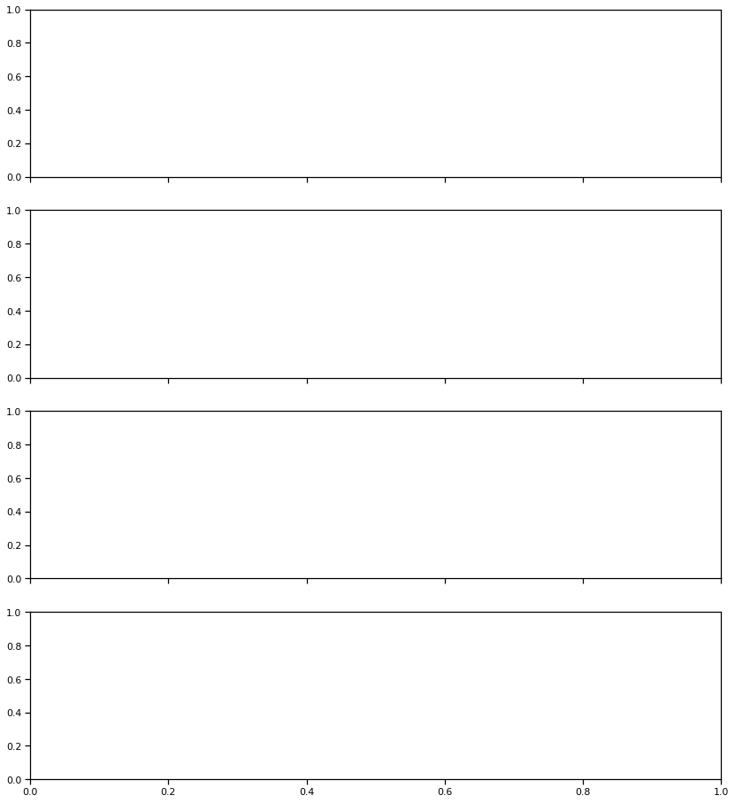

a-opic irradiance matching with STLAB¶
This example demonstrates how to find the STLAB settings that match a given spectrum for \(a\)-opic irradiance. In this particular case, what we are trying to match is the spectral output of the NeurOptics PLR-3000 device, which administers light stimuli with 4 white LEDs. The PLR-3000 settings were measured with an OceanOptics STS-VIS spectrometer placed where the eye would normally be, and calibrated using our standard pipeline.
[23]:
import pandas as pd
import matplotlib.pyplot as plt
import seaborn as sns
sns.set_context('notebook')
from pyplr.CIE import get_CIES026
# Load PLR-3000 data
plr3000 = pd.read_csv(
'../data/PLR-3000_oo_calibrated_spectra.csv', index_col='uW')
# Plot SPDs
for i in plr3000.index:
plr3000.loc[i].plot(label=i)
plt.legend()
plt.legend().set_title('uW')
plt.ylabel('W/m$^2$/nm')
plt.xlabel('$\lambda$ [nm]')
plt.title('PLR-3000 settings')
leg = plt.gca().legend(
loc='center left', bbox_to_anchor=(1.05, 0.5), ncol=1)
leg.set_title('uW')
# Plot a-opic irradiances
sss = get_CIES026(asdf=True)
sss = sss.fillna(0)
plr_3k_ao = w_m2_nm.dot(sss)
data = (plr_3k_ao.reset_index()
.melt(id_vars=['uW'],
var_name=['aopic'],
value_name='irradiance'))
f, ax = plt.subplots()
sns.barplot(
data=data, x='uW', y='irradiance', hue='aopic', ax=ax)
ax.legend(
loc='center left', bbox_to_anchor=(1.05, 0.5), ncol=1)
ax.set_ylabel('W/m$^2$');


Start by making the calibration context
[26]:
from pyplr.calibrate import CalibrationContext
cc = CalibrationContext(
'../data/S2_corrected_oo_spectra.csv', binwidth=1)
_ = cc.plot_calibrated_spectra()
cc.data
[26]:
| 380 | 381 | 382 | 383 | 384 | 385 | 386 | 387 | 388 | 389 | ... | 771 | 772 | 773 | 774 | 775 | 776 | 777 | 778 | 779 | 780 | ||
|---|---|---|---|---|---|---|---|---|---|---|---|---|---|---|---|---|---|---|---|---|---|---|
| led | intensity | |||||||||||||||||||||
| 0 | 0 | 0.000000 | 0.000000 | 0.000000 | 0.000000 | 0.000000 | 0.000000 | 0.000000 | 0.000000 | 0.000000 | 0.000000 | ... | 0.000000 | 0.000000 | 0.000000 | 0.000000 | 0.000000 | 0.000000 | 0.000000 | 0.000013 | 0.000000 | 0.000000 |
| 65 | 0.000000 | 0.000000 | 0.000000 | 0.000000 | 0.000000 | 0.000000 | 0.000000 | 0.000000 | 0.000000 | 0.000000 | ... | 0.000000 | 0.000000 | 0.000000 | 0.000000 | 0.000000 | 0.000000 | 0.000000 | 0.000000 | 0.000000 | 0.000000 | |
| 130 | 0.000000 | 0.000000 | 0.000000 | 0.000000 | 0.000000 | 0.000000 | 0.000000 | 0.000000 | 0.000000 | 0.000000 | ... | 0.000000 | 0.000000 | 0.000000 | 0.000000 | 0.000000 | 0.000000 | 0.000000 | 0.000000 | 0.000000 | 0.000000 | |
| 195 | 0.000026 | 0.000020 | 0.000023 | 0.000012 | 0.000033 | 0.000040 | 0.000030 | 0.000032 | 0.000035 | 0.000028 | ... | 0.000015 | 0.000000 | 0.000008 | 0.000011 | 0.000000 | 0.000013 | 0.000012 | 0.000000 | 0.000017 | 0.000000 | |
| 260 | 0.000147 | 0.000152 | 0.000158 | 0.000165 | 0.000155 | 0.000145 | 0.000154 | 0.000141 | 0.000171 | 0.000167 | ... | 0.000083 | 0.000075 | 0.000087 | 0.000083 | 0.000072 | 0.000087 | 0.000085 | 0.000008 | 0.000101 | 0.000082 | |
| ... | ... | ... | ... | ... | ... | ... | ... | ... | ... | ... | ... | ... | ... | ... | ... | ... | ... | ... | ... | ... | ... | ... |
| 9 | 3835 | 0.003778 | 0.004093 | 0.003488 | 0.003937 | 0.003176 | 0.003136 | 0.003321 | 0.002896 | 0.003240 | 0.003787 | ... | 0.002468 | 0.002702 | 0.002610 | 0.002494 | 0.002934 | 0.002626 | 0.002619 | 0.002212 | 0.002527 | 0.002909 |
| 3900 | 0.003541 | 0.003839 | 0.003389 | 0.003721 | 0.003089 | 0.003009 | 0.003012 | 0.002801 | 0.003189 | 0.003692 | ... | 0.002366 | 0.002733 | 0.002390 | 0.002299 | 0.002797 | 0.002622 | 0.002441 | 0.002099 | 0.002625 | 0.002919 | |
| 3965 | 0.003653 | 0.003971 | 0.003476 | 0.004007 | 0.003401 | 0.003161 | 0.003371 | 0.002836 | 0.003298 | 0.003639 | ... | 0.002297 | 0.002765 | 0.002593 | 0.002545 | 0.002785 | 0.002709 | 0.002760 | 0.002129 | 0.002687 | 0.002693 | |
| 4030 | 0.003891 | 0.003956 | 0.003668 | 0.003874 | 0.003149 | 0.003184 | 0.003271 | 0.002737 | 0.003217 | 0.003631 | ... | 0.002531 | 0.002757 | 0.002546 | 0.002377 | 0.002724 | 0.002598 | 0.002409 | 0.002036 | 0.002534 | 0.002836 | |
| 4095 | 0.003615 | 0.004133 | 0.003597 | 0.004069 | 0.003316 | 0.003332 | 0.003100 | 0.003010 | 0.003414 | 0.003781 | ... | 0.002344 | 0.002647 | 0.002569 | 0.002451 | 0.002913 | 0.002743 | 0.002612 | 0.002170 | 0.002548 | 0.002757 |
640 rows × 401 columns
Search for STLAB settings that match PLR-3000 for a-opic irradiance
[33]:
import itertools
import numpy as np
# At least 5 LEDs are required here
num_leds = 5
use = ['L','M','S','Mel', 'Rods']
keep = []
# Loop through all possible combinations in 10 choose 5
for choose in itertools.combinations(range(10), num_leds):
# Get the irradiances for each LED at maximum
settings_to_irradiances = cc.aopic.loc[[(led, 4095) for led in choose], use]
# Take the inverse
irradiances_to_settings = np.linalg.inv(settings_to_irradiances)
# Calculate the required input fraction for the chosen LEDs
for mw in plr_3k_ao.index:
plr_irradiances = plr_3k_ao.loc[mw, use].T
settings = plr_irradiances.dot(irradiances_to_settings)
# Keep the settings where all values are greater than 0 and less then 1
if all(settings < 1) and all(settings > 0):
keep.append((mw, choose, settings))
print('\n' + str(len(keep)) + ' settings found')
82 settings found
[77]:
predicted
[77]:
| 380 | 381 | 382 | 383 | 384 | 385 | 386 | 387 | 388 | 389 | ... | 771 | 772 | 773 | 774 | 775 | 776 | 777 | 778 | 779 | 780 | |
|---|---|---|---|---|---|---|---|---|---|---|---|---|---|---|---|---|---|---|---|---|---|
| 0 | 0.0 | 0.0 | 0.0 | 0.0 | 0.0 | 0.0 | 0.0 | 0.0 | 0.0 | 0.0 | ... | 0.0 | 0.0 | 0.0 | 0.0 | 0.0 | 0.0 | 0.0 | 0.000123 | 0.0 | 0.0 |
1 rows × 401 columns
[74]:
settings = pd.DataFrame()
predicted = pd.DataFrame()
plr_mws = [10, 50, 121, 180]
idx=[]
for mw in plr_mws:
vals = [val[1:] for val in keep if val[0] == mw]
for k in vals:
leds = k[0]
intensities = np.round(k[1] * 4095).astype('int')
spec = [0]*10
for led, i in zip(leds, intensities):
spec[led] = i
pred = cc.predict_spd(spec)
predicted = predicted.append(pred)
settings = settings.append(spec)
idx.append(mw)
settings.reset_index(inplace=True, drop=True)
settings['mw'] = idx
predicted.reset_index(inplace=True, drop=True)
predicted['mw'] = idx
keeps = []
for mw in plr_mws:
predmw = predicted[predicted.mw==mw]
predmw = predmw[predmw.columns[:-1]]
best = predmw.sub(w_m2_nm.loc[mw].to_numpy()).pow(2).sum(axis=1).idxmin()
keeps.append(best)
optimal_predicted = predicted.loc[keeps].set_index('mw')
optimal_settings = settings.loc[keeps].set_index('mw')
optimal_settings
---------------------------------------------------------------------------
AttributeError Traceback (most recent call last)
<ipython-input-74-ba8297b38d05> in <module>
14 # ax1.plot(w_m2_nm.columns, pred)
15 predicted = predicted.append(pred)
---> 16 settings = settings.append(spec.T)
17 idx.append(mw)
18
AttributeError: 'list' object has no attribute 'T'
[34]:
fig, axs = plt.subplots(nrows=4, sharex=True, figsize=(14,16))
for ax, mw in zip(axs, optimal_settings.index):
w_m2_nm.loc[mw].plot(label='plr_3000: {} uW'.format(mw), ax=ax, color='k', linestyle='--')
ax.plot(w_m2_nm.columns, optimal_predicted.loc[mw], label='optimal_stlab: ' + str(optimal_settings.loc[mw].to_list()), linestyle='--')
ax.legend()
ax.plot(w_m2_nm.columns, predicted.set_index('mw').loc[mw].T, lw=.3)
for ax in axs:
ax.set_ylabel('W/m$^2$/nm')
ax.set_xlabel('$\lambda$ [nm]')
---------------------------------------------------------------------------
NameError Traceback (most recent call last)
<ipython-input-34-6717db3c850b> in <module>
1 fig, axs = plt.subplots(nrows=4, sharex=True, figsize=(14,16))
----> 2 for ax, mw in zip(axs, optimal_settings.index):
3 w_m2_nm.loc[mw].plot(label='plr_3000: {} uW'.format(mw), ax=ax, color='k', linestyle='--')
4 ax.plot(w_m2_nm.columns, optimal_predicted.loc[mw], label='optimal_stlab: ' + str(optimal_settings.loc[mw].to_list()), linestyle='--')
5 ax.legend()
NameError: name 'optimal_settings' is not defined

[125]:
from pyplr.stlab import pulse_protocol, video_file_to_dict
for mw, spec in optimal_settings.iterrows():
print(row.to_list())
pulse_protocol(pulse_spec=spec.to_list(),
pulse_duration=1000,
fname='PLR-3000-{}-mw'.format(mw))
[0, 1105, 143, 0, 0, 0, 740, 70, 0, 0]
"PLR-3000-10-mw.dsf" saved in the current working directory.
[0, 1105, 143, 0, 0, 0, 740, 70, 0, 0]
"PLR-3000-50-mw.dsf" saved in the current working directory.
[0, 1105, 143, 0, 0, 0, 740, 70, 0, 0]
"PLR-3000-121-mw.dsf" saved in the current working directory.
[0, 1105, 143, 0, 0, 0, 740, 70, 0, 0]
"PLR-3000-180-mw.dsf" saved in the current working directory.
[124]:
vf = video_file_to_dict('PLR-3000-180-mw.dsf')
vf
[124]:
{'header': {'version': 1,
'model': 'VEGA10',
'channels': 10,
'spectracount': 4,
'transitionsCount': 4,
'fluxReference': 0,
'repeats': 1},
'metadata': {'creation_time': '2021-02-10 13:23:00.011513',
'creator': 'jtm',
'protocol': 'pulse',
'pulse_spec': '[0, 1105, 143, 0, 0, 0, 740, 70, 0, 0]',
'pulse_duration': '1000'},
'spectra': [[0, 1105, 143, 0, 0, 0, 740, 70, 0, 0],
[0, 1105, 143, 0, 0, 0, 740, 70, 0, 0],
[0, 0, 0, 0, 0, 0, 0, 0, 0, 0],
[0, 0, 0, 0, 0, 0, 0, 0, 0, 0]],
'transitions': [{'spectrum': 0, 'power': 100, 'time': 0, 'flags': 0},
{'spectrum': 1, 'power': 100, 'time': 1000, 'flags': 0},
{'spectrum': 2, 'power': 100, 'time': 1000, 'flags': 0},
{'spectrum': 3, 'power': 100, 'time': 1100, 'flags': 0}]}
[ ]: